Cygnus logo concepts
Three directions for the project mark. A and B are built from the real positions and colours of the Northern Cross stars; C is built from the measurement the project makes. Each is shown on dark and light, at icon sizes (64, 32, 16 px), in one colour, in night-vision red, and as a lockup with the wordmark.
Northern Cross
The five bright stars of the Northern Cross in their true relative positions from the Yale Bright Star Catalogue, sized by magnitude. Albireo, the swan's head, is drawn as its gold-and-blue double from the catalogue colours of its two stars.
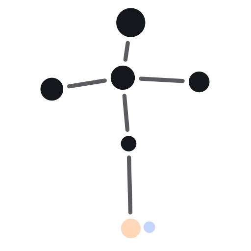
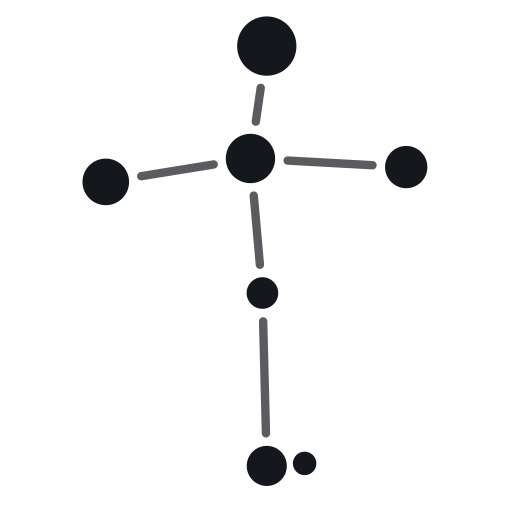
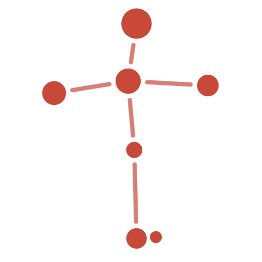
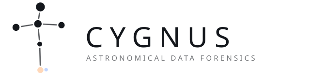
Cross in a reticle
The same asterism inside a measuring reticle: the sky, and the act of measuring it. Reads well as an app icon and favicon.
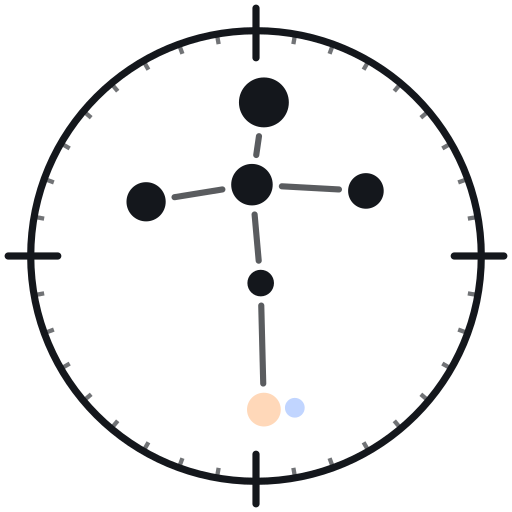
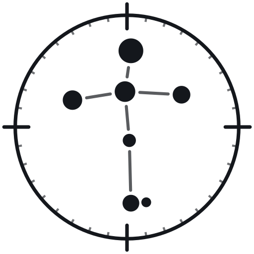
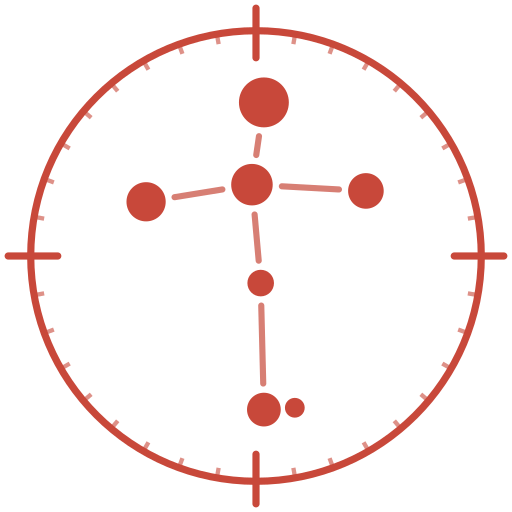
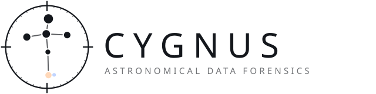
Transit
A planet crossing a star and the dip it makes in the light curve: the project's core measurement. Not tied to Cygnus the constellation.
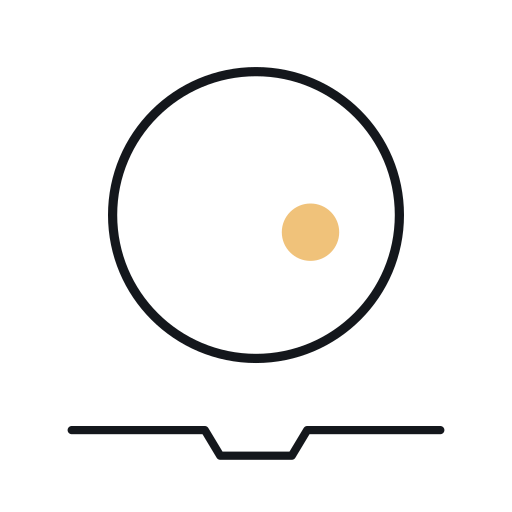
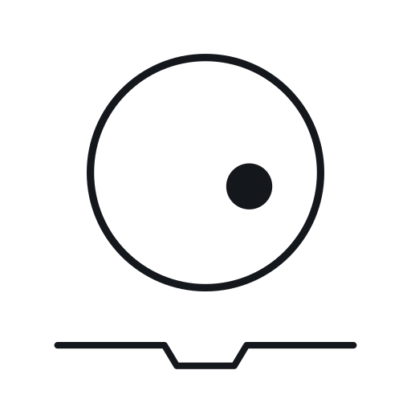
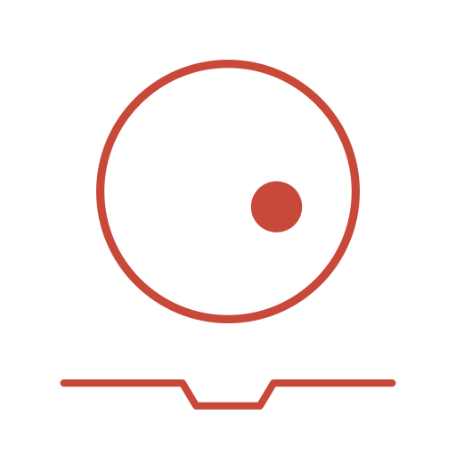
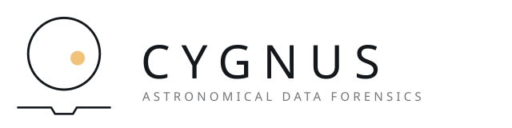
Geometry: Yale Bright Star Catalogue positions (VizieR V/50), gnomonic projection about Sadr, east to the left, rotated 41.7° so Deneb sits above Albireo. Star sizes scale with V magnitude. Albireo A (B−V 1.13) and B (B−V −0.10) take their catalogue colours; their true 35″ separation is far below this scale, so B is drawn touching A as a signature. Wordmark set in IBM Plex Sans for the concept; the final mark would be outlined paths.